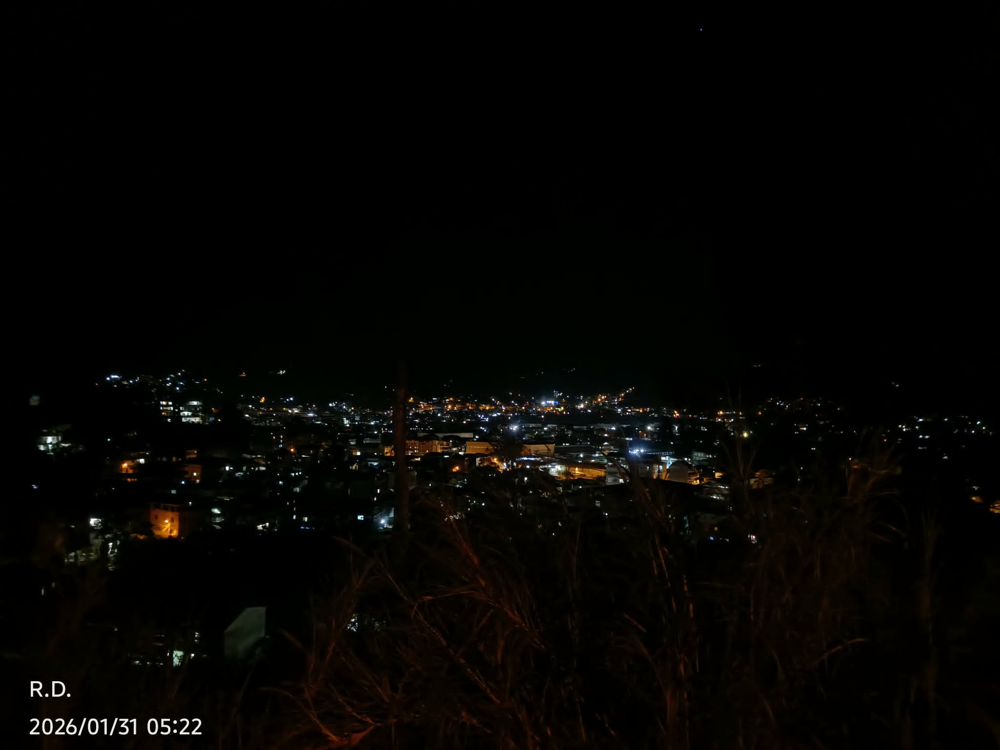

The Soul-Basin's Vigil
The valley is a cauldron of trapped souls, and those lights are the flickering remains of their life force. They aren't living in houses; they are pinned to the earth by an ancient curse, forced to glow so the things in the dark can see what they are eating.
The pitch-black void above isn't the sky—it is the underbelly of a sleeping god. Every few centuries, it breathes, and the "wind" you feel in the tall grass is actually its inhale, pulling the heat from the valley into its lungs.
Those shadows in the foreground are the Sentinels, creatures made of thorns and silence. They stand at the edge of the basin to ensure no one escapes the glow. If you stay on that ridge past dawn, your own light will join the cluster, and someone else will look down at the valley, wondering why the stars have fallen into a hole.